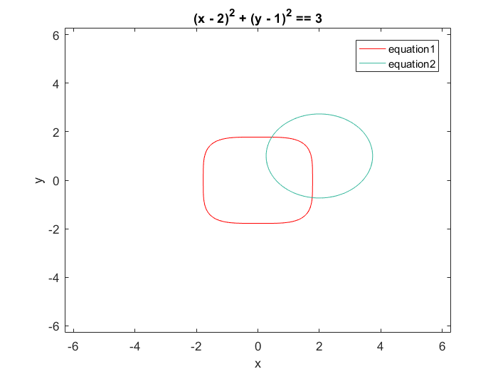

clear all
syms x y
eq1=x.^4+y.^4==10
gr1=ezplot(eq1); hold on;
set(gr1,'color','r');
eq2=(x-2).^2+(y-1).^2==3
gr2=ezplot(eq2); hold off;
legend('equation1','equation2')
co=[4;-2];
for n = 1:10
[J,F]=evaluate1(co(1,1),co(2,1));
co=co-inv(J)*F;
end
answer_to_3_3=co
co=[1;2];
for n = 1:10
[J,F]=evaluate1(co(1,1),co(2,1));
co=co-inv(J)*F;
end
answer_to_3_4=co
co=[1;1;1];
for n = 1:50
[J,F]=evaluate2(co(1,1),co(2,1),co(3,1));
co=co-inv(J)*F;
end
answer_to_3_6=co
inaccuracies=[15*co(1,1)+co(2,1)^2-4*co(3,1)-13;co(2,1)^2+10*co(2,1)-exp(-co(3,1))-11;co(2,1)^3-25*co(3,1)+22]
S1=[1,2,0,40.31];
S2=[2,0,2,63.59];
S3=[1,1,1,30.92];
S4=[2,1,0,50.33];
sol=[0;0;0;0];
c2=2.214*(10^(-3));
for n = 1:100
J=[2*(sol(1)-S1(1)),2*(sol(2)-S1(2)),2*(sol(3)-S1(3)),-2*c2*(sol(4)-S1(4));2*(sol(1)-S2(1)),2*(sol(2)-S2(2)),2*(sol(3)-S2(3)),-2*c2*(sol(4)-S2(4));2*(sol(1)-S3(1)),2*(sol(2)-S3(2)),2*(sol(3)-S3(3)),-2*c2*(sol(4)-S3(4));2*(sol(1)-S4(1)),2*(sol(2)-S4(2)),2*(sol(3)-S4(3)),2*c2*(sol(4)-S4(4))];
F=[(sol(1)-S1(1))^2+(sol(2)-S1(2))^2+(sol(3)-S1(3))^2-c2*(S1(4)-sol(4))^2;(sol(1)-S2(1))^2+(sol(2)-S2(2))^2+(sol(3)-S2(3))^2-c2*(S2(4)-sol(4))^2;(sol(1)-S3(1))^2+(sol(2)-S3(2))^2+(sol(3)-S3(3))^2-c2*(S3(4)-sol(4))^2;(sol(1)-S4(1))^2+(sol(2)-S4(2))^2+(sol(3)-S4(3))^2-c2*(S4(4)-sol(4))^2];
sol=sol-inv(J)*F;
end
x=sol(1)
y=sol(2)
z=sol(3)
AH=sol(1)^2+sol(2)^2+sol(3)^2;
altitude=(AH-1)*6371008
latitude=asin(sol(3)/AH)
longitude=atan(sol(2)/sol(1))
eq1 =
x^4 + y^4 == 10
eq2 =
(x - 2)^2 + (y - 1)^2 == 3
answer_to_3_3 =
1.7665
-0.7162
answer_to_3_4 =
0.4517
1.7764
answer_to_3_6 =
1.0420
1.0330
0.9241
inaccuracies =
0
0
0
x =
0.0463
y =
0.8838
z =
0.4669
altitude =
7.2435e+03
latitude =
0.4851
longitude =
1.5185
